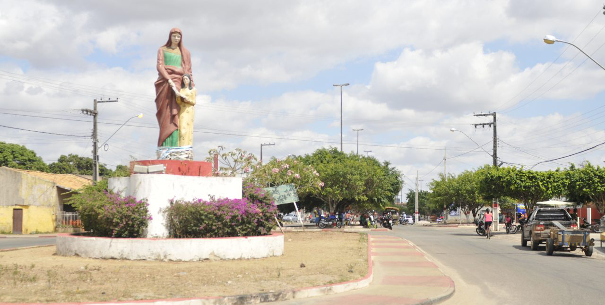

Aquidabã
História
Terra de José Augusto Sergipano, povo simples, gentil e trabalhador. Já foi Cemitério, adotando Sant'Ana como padroeira e para lembrar a Guerra do Paraguai, recebeu o nome de Aquidabã. Município do Estado de Sergipe, localizado na região central do Sertão do São Francisco, a 98 quilômetros de Aracaju. A denominação dessa cidade reporta-se ao riacho Aquidabã, afluente do Rio Paraguai, localizado a leste de Assunção, que em suas margens foi travada em primeiro de março de 1870 a batalha que pôs fim a Guerra do Paraguai, considerado um dos maiores genocídios das Américas.
O município de Aquidabã, fora criado pela lei nº 1.215 de 4 de abril de 1882, sendo desmembrado o seu território dos de Propriá e Capela, conseguindo a sua independência e consequentemente emancipação, momento que a Freguesia é elevada à categoria de Vila. Sabe-se, pela tradição, que a Câmara Municipal, que governava o Município e a Sede Municipal, já funcionava há muito tempo. No fim do século passado, por volta de 1898, criou-se a Intendência, tendo sido empossado Francisco Figueiredo, como 1º administrador municipal, após nomeação pelo Governo do Estado de Sergipe. Ressalta-se que a povoação surgiu, no 2º quartel do século XIX, à beira da estrada, ao redor de um cemitério, próximo a uma santa cruz, daí o porque do primitivo nome : Cemitério. Como a Santa Cruz, depois, fora ampliada, dando-se como santa padroeira, Sant'Ana (não se deve escrever, por razões históricas Santana) o lugar já no ato de criação da povoação, tomou o nome de Cemitério de Sant'Ana.
Aquidabã é hoje uma cidade florescente e progressista, tem um grande futuro pela frente, pois o município é próspero, sobretudo pela sua riqueza pecuária, seu comércio e sua feira, uma das melhores do estado. A razão primeira da povoação foi, segundo os dados históricos, o do surgimento da feira, onde se vendem às segundas-feiras, os produtos indispensáveis a alimentação do povo circunvizinho, pois a feira tem influência em várias cidades da região. Os cidadãos nascidos em Aquidabã são: aquidabãenses, aquidabanenses e ainda segundo o escritor Lauro Rocha de Lima, em razão de sua origem Tupy podem ser chamados de aquidabapolitanos.
fonte: https://aquidaba.se.gov.br/historiaPontos Turísticos
Paróquia de Senhora Santana
Paróquia em homenagem a padroeira da cidade Nossa Senhora S'antana, Santa Ana ou Sant'Ana é a mãe de Nossa Senhora e avó de Jesus. Sobre ela, porém, há poucos dados biográficos. As referências que chegaram até nós sobre os pais de Maria foram deixadas pelo Proto-Evangelho de Tiago.
Dados Gerais de acordo com o IBGE
| Prefeito (a) | Francisco Francimario Rodrigues de Lucena |
| Vice-Prefeito (a) | Diogo Barbosa de Souza |
| Site do município | https://aquidaba.se.gov.br/ |
| Área territorial | 359,543 km² |
| População estimada | 21.312 pessoas |
| Densidade demográfica | 57,6 hab/km² |
| IDHM | 0,578 |
| PIB per capita | R$ 3.252,00 |